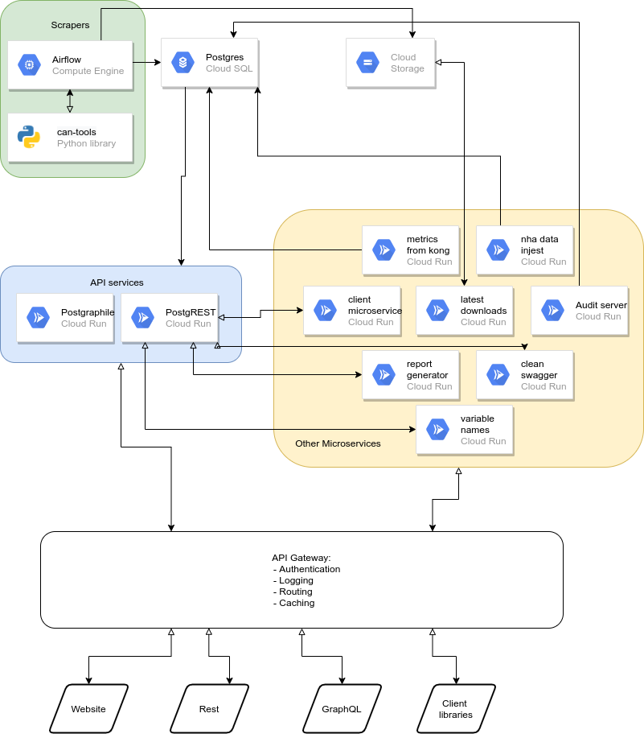

Overview¶
The overall microservice architecture we use is shown in the diagram below:
{kind=link}
In, words, these components are
Scrapers: these are open source scrapers written in Python. The repository is here https://github.com/covid-projections/can-scrapers
Database: we store all data in a postgrestql database
API: We have REST and GraphQL APIs. They are automatically generated using the PostgREST and postgraphile libraries
Client Libraries: We have client libraries in Python, R, and Julia that integrate with the REST API
API Gateway: we have a Kong API gateway that sits in front of all user requests and handles things like caching, routing, and authentication
Other services: we have a handful of other microservices that perform specific functions. These are contained in docker containers that communicate over HTTP and are managed by Google Cloud run
We have a few comments about each of the 6 component groups below
Scrapers¶
We have written about 70 scrapers to gather data from various sources. The sources are primarily state and county level dashboards, typically operated by the local government itself or the local health department. Other scrapers pull in data from sources like the New York Times, HHS, Our World in Data (for international data), and CovidTrackingProject.
Running Scrapers: Apache Airflow¶
Inside the can-scrapers repository there is a services/airflow diretory that contains infrastructure code for running all scrapers using Apache Airflow.
Most of the Airflow DAGs are automatically generated. This happens by importing
can_tools and checking for all subclases of a particular base class. For
each of these subclasses we generate a dag that calls get to fetch the
data and put to store it in the database. The get methods are
all specialized for each scraper. The put method can also be
specialized, but often the one from the base class is sufficient.
Each DAG runs once every two hours. We assign a random execution time to each DAG so that they don’t all try to run at the exact same time. This helps us better utilize compute resources.
Database¶
When airflow runs a scraper from can_tools, all data ends up in a postgresql database. The database has three main schemas:
data: this stores the raw data in a mostly normalized way.
meta: This schema stores metadata such as lookup tables for variable id ↔ variable name and state/county metadata
api: this is the schema that determines the user facing API. It mostly contains SQL views that join together tables from data and meta schemas to control the user experience
The client libraries/APIs (see below) only access the api schema
We run the database using Google Cloud SQL.
API¶
We provide REST and GraphQL APIs to our users
REST API¶
The REST API is automatically generated using
PostgREST. PostgREST authenticates to the
database via read-only credentials and automatically generates endpoints for
each table or view in the api schema.
PostgREST also auto-generates documentation as a swagger/OpenAPI json file. We use this on our website to populate the doc page, in the client libraries to auto-generate classes for each endpoint, and to create a postman collection as part of their featured list of covid APIs (https://postman-toolboxes.github.io/covid-19/#featured-collections)
GraphQL API¶
We also have a complete GraphQL API. This is also automatically generated, but by the [postgraphile](https://www.graphile.org/postgraphile/) library.
The endpoint is https://api.covidcountydata.org/graphql and an interactive GraphiQL playground can be found at https://api.covidcountydata.org/graphiql
Client Libraries¶
Using the swagger.json file produced by PostgREST we have auto-generated client libraries in Python, R, and Julia
They all provide the same set of core features, including
Declarative query building: users specify what data they would like to end up with and we do the work of making all requests, merging/aligning datasets, converting to long form, and returning a dataframe with all data
API key handling: there is a register method in each client library that handles requesting and storing API keys. If a user calls register and gives their email address, the API key will be looked up or generated and returned to the user. The API key is then stored in the user’s home directory and will be used for all subsequent API interactions, even in future programming sessions. Users also have the option to manually pass an API key (perhaps looked up from an environment variable) when creating a client
Documentation/introspection: the library also hooks into each language’s native system for documentation and introspection. For example, in Python each API endpoint is an method on the Client class. These methods can be searched interactively using tab completion. Also if you are in IPython or Jupyter you can use ? to get the auto-generated documentation directly from the swagger.json file
API Gateway¶
We route all requests to https://api.covidcountydata.org/XXXX through a single API gateway
This gateway is creating using the open source Kong API gateway library and handles a variety of tasks for us:
Generating API keys for users: using key-auth plugin (https://docs.konghq.com/hub/kong-inc/key-auth/
Checking API keys on each request: again using key-auth plugin
Logging/tracking: All requests are logged with a custom microservice (see below) and stored in our Postgres database. This happens using the Kong http-log plugin (https://docs.konghq.com/hub/kong-inc/http-log/)
Routing: we have a variety of servers/services running. Kong will inspect the requested url and headers and route to the correct underlying server.
Caching: certain requests/endpoints can be cached by the server to avoid un-necessary hits to the database. This is done using the Kong proxy-cache plugin (https://docs.konghq.com/hub/kong-inc/proxy-cache/)
request or response transformation: some of the backend microservices require certain headers to be set. In these cases we use the request transformer (https://docs.konghq.com/hub/kong-inc/request-transformer) and response transformer (https://docs.konghq.com/hub/kong-inc/response-transformer) plugins.
Other Services¶
We have a few other microservices that support our APIs
These are all contained in docker containers and run an HTTP server for processing requests
Each of these is deployed and auto-scaled using Google Cloud Run
The microservices are:
Audit server: we prototyped a feature on our website to allow crowd-sourced auditing of or data. Users would visit the audit page of the site, we would select a specific scraper for them to audit. Once selected, we would show the scrapers current data as well as open an iframe containing the scraper’s url so users can verify that each datapoint we were extracting from the source was correct. Users could then fill out a form on the website. The form’s contents were sent to this audit server and logged in our database. It didn’t gain traction or make it out of PoC
clean_swagger: the swagger file generated by PostgREST is a little messy. We have simple python service that obtains the raw PostgREST swagger.json and cleans it up before returning to places like the client library, website, or postman collection.
client-microservice: we are about to launch a dataset customizer feature to our web page. This is basically a GUI version of the client libraries. On the website users can select which datasets they’d like and what filters (e.g. geography, time windows) they want to apply. Once the request is built up by web users, the site sends a request to this microservice, which is a very thin wrapper around our Python client. The Python client will request the data, prepare the return and send back to the frontend for a clean/custom download
latest_downloads: we have a download csv feature on the website. This is similar to CANs API and is a thin layer that sits on top of a cloud storage bucket. We had user feedback that we wanted to customize the filename of the downloaded files to include the date the data was downloaded. This latest_downloads microservice gets a request for a particular dataset to download, fetches the most recent version of that from cloud storage bucket, and then returns it to the user with the current date added to the file name. Probably overkill to have a whole microservice for this, but it weighed in at less than 40 lines of code, so it was a pretty easy solution to implement and maintain.
metrics-from-kong: this microservice implements our custom logging middleware. All requests to the API are relayed from Kong to this micro service where we can process the request and store the output in our database
nha_data_injest: this is a microservice that handles scraping data from the Nevada Health association pdfs CAN has been receiving. It wraps one of the scrapers in can_tools and exposes it as a triggerable cloud function so it can process files on demand, as they come in
postgraphile: This is the microservice that runs the postgraphile library providing our GraphQL API
postgrest: This is the microservice that runs the PostgREST library and provides our REST api
report_generator: This microservice is responsible for reporting when new variables first entered our database. The output is rendered at the bottom of https://covidcountydata.org/data to provide a “changelog” for when new data came into the system.
variable_names: this microservice provides support for the custom data downloader feature we are about to release. For each endpoint it returns a list of unique variable names contained within the dataset. This allows the front-end to allow filtering in/out variables within a dataset. It is a microservice so we can simplify front-end coding and so that this variable list can be cached by Kong and we can avoid unnecessary trips to the database for this info.